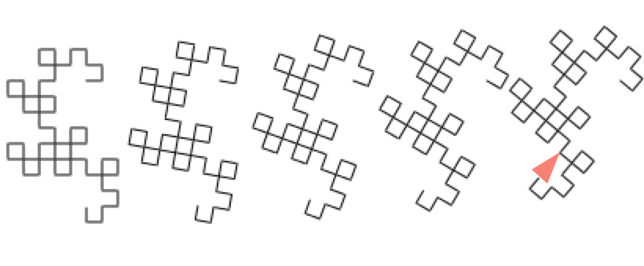
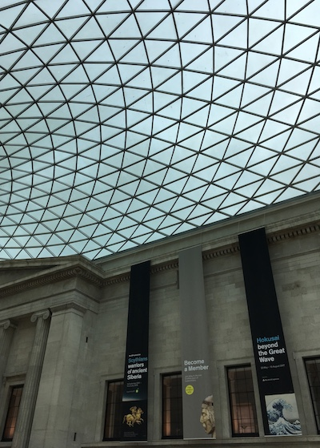

32 views of computing—with Racket and Raspberry Pi

So, you’re looking at something called 32 views of computing—with Racket and Raspberry Pi.
32 views for short.
What is 32 views…?
It’s a series of projects, in which we’ll learn together about how to use a programming language called Racket, running on the small, affordable Raspberry Pi computer . The idea of the projects will be to interact with the real world (flashing lights, sensing environmental parameters such as temperature) and presenting the information sensed. Along the way we’ll pick up some general computing skills.
The projects will be released in batches (the first batch is parts 1 and 2).
Why the name ‘32 views…‘?
I was looking for a theme to bring these set of projects together. Then last year I went to an exhibition of the work of Japanese artist Katsushika Hokusai; which gave me an idea.

A bit of history… in about 1830, Hokusai and his daughter Ōi created a series of prints called 36 views of Mount Fuji. They were published in groups over a number of months, and made use of new materials; available to Japanese artists economically for the first time (for example, the pigment Berlin Blue).
For the price of a bowl of noodles, anyone could buy a print in the series; the most famous of which is The Great Wave.
I’ve stolen Hokusai-sensei’s publishing idea–hence 32 views of computing—with Racket and Raspberry Pi. I like the multiple views notion, because it provides both me, and you the reader with small, hopefully approachable chunks to digest/make. And ‘32’ because computers like powers of powers of two!
Why Racket?
The Pi is powerful enough to support seriously capable programming tools–Python is rightly of course incredibly popular, but is only one of many systems which can be used in this activity; available for the price of a couple of minutes of your time installing them.
If programming languages are the computing equivalent of a Swiss Army Knife (™ Victorinox AG), Racket is like having a Swiss Army Knife factory. Experiencing it is well worth your time and effort, even (especially) if you plan to use other languages mostly.
Why the Raspberry Pi?
Since it was released in 2012, the Pi (we’ll call it that from now on) has created one of the most vibrant maker communities around, so there’s plenty of support available. There is a huge market of add-ons for it (some of which we’ll be using in our projects) and it provides just the right amount of power, for just the right amount of money. And once you’ve worked through the projects, you can re-purpose your Pi as an internet radio, a robot or a Homekit accessory.
If you like, the Pi is this project’s Berlin Blue.
One other thing—most Pis are are made in Wales, the country of my forebears and which welcomed me as an immigrant more years ago than I care to remember.

Is there a theme to it all? A step into history
I’m really taken with machines and making stuff.
I guess the first machines which made an impression on me were the trains which my grandparents would take me to see as a toddler as they passed through the local station. Also I recall them giving me a scrapped light switch, which made a satifying click as it was toggled—and which entertained me for what must have seemed a pathological period to onlookers.
Later, my dad was keen on the experimental stereo transmissions broadcast by the BBC and I watched him assemble the kit to listen in–including homemade speaker cabinets.
My mum was a committed Primary (Kindergarden) teacher, and a life-long maker. Observing her creating teaching materials to engage her students is a memory that stays with me, as is the orange velvet jacket I cajoled her to make for me from a discarded curtain as a teenager (in my defence it was the 1970s). One of my most prized books is her copy of Mindstorms.
Amateur (ham) radio started me off in electronics making, and a University project to build a microcomputer got me interested in computing machinery, which developed into ‘making’ jobs in Healthcare, Environmenal Research, Computer Architecture and Publishing.
Machines have also fired my imagination—from Robbie the Robot in Fireball XL5 via Bomb no. 20 in Dark Star to the gentle robots of Laputa.
When I had the (much) later realization that with computers, it was possible to build imagined machines in software it was a revelation. And that computing applications themselves are a tower of machines; the underlying microcode pretending to be the CPU which executes the code, which is pretending to be a game, a car engine controller…
So, just to say there are going to be machines; built in both software and hardware, possibly even fabric.
Do I have to pay for this?
Some project resources may require payment, you’ll need to buy, beg some components to build with your Pi, and you’re welcome to contribute to fund the batches as they appear. But this online text will be available for free.
You’ll see at the bottom of each page that the projects are released under a Creative Commons Atribution-ShareAlike licence, which gives you a lot of freedom to adapt and share the content.
If you’re ready to start, move on to the first project.
Some references
Hokusai: beyond the Great Wave–The British Museum Blog
Raspberry Pi - Teach, Learn, and Make with Raspberry Pi
You can sign up for a low-volume newsletter about the Projects.
Built with the (fabulous) Pollen.

32 views of computing—with Racket and Raspberry Pi by Stephen Lloyd is licensed under a Creative Commons Attribution-ShareAlike 4.0 International License.
Based on a work at https://32views.net.